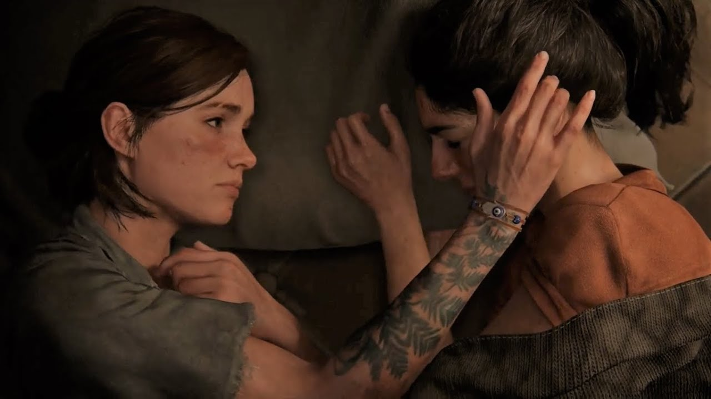
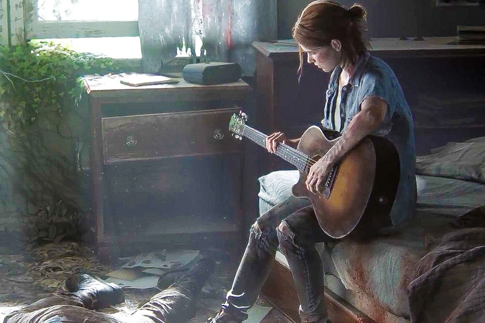

Review - The Last of Us 2
Game desenvolvido pela Naughty Dog
As últimas palavras de Joel no primeiro The Last of Us cravaram o desfecho de um dos jogos mais impactantes da década. Sete anos depois, estamos no centro do pós-apocalipse novamente, com a difícil tarefa de desconstruir nossos heróis e virar os holofotes para outros pontos de vista. E não, você provavelmente não estará preparado para isso.
The Last of Us Part II é, de fato, um game sobre ódio, como o próprio diretor Neil Druckmann já havia declarado. Não espere pela mesma jornada intimista do antecessor. A Naughty Dog ousa expandir a história com faces inéditas e uma experiência agridoce (por falta de um termo mais exato) aos jogadores. Se sua única dúvida é saber se deve ou não jogar este game, já facilito aqui: sim. Esta é uma experiência inigualável e dificilmente algum review conseguirá captar toda essa complexidade. O jogo estará disponível para PlayStation 4 em 19 de junho.
Historia:
Por meio de uma narrativa não linear, a história viaja pelos anos entre o presente e os acontecimentos logo após o final de The Last of Us. Tudo se amarra, não há pontas soltas entre o que aconteceu e o que não foi mostrado. Você compreende como Ellie e Joel se instalaram na comunidade de Jackson, onde Tommy vive; acompanha diálogos e momentos marcantes na vida da dupla e aos poucos entende como as relações se modificaram durante o tempo; quais pilares foram quebrados, quais foram erguidos.
O tempo deixa claro que a vida encontrou seus eixos dentro do que ali pode ser considerado normal. A comunidade de Jackson possui um sistema de sobrevivência, produção e segurança em que nossa protagonista Ellie parece muito bem estabelecida.
Vivendo a vida mais mundana possível, Ellie distribui suas tarefas de patrulha entre os pequenos prazeres: assistir a filmes, ler seus gibis preferidos, tocar violão -- sim, a promessa foi cumprida, como pudemos ver nos trailers -- e passar o tempo com o amigo Jesse e a amiga e namorada Dina.
Dina é um refúgio para Ellie, alguém que veio depois de todos os traumas e perdas da história contada no DLC Left Behind e no primeiro jogo. Ela é um rosto novo no qual Ellie deposita esperança e certa paz, quase beirando uma fuga da realidade.
Ellie e Dina são maduras por tudo o que passaram, mas ainda são adolescentes no final do dia. O que resulta em conversas e interações que às vezes soam até tolas diante de tudo o que acontece fora dos portões da comunidade. Esta é uma síntese de boa parte das interações românticas que vemos no decorrer do game, não apenas com Ellie: a presença de alguns clichês e dúvidas frívolas demais em relação ao mundo em que vivem. Tais cenas às vezes destoam da tensão de um The Last of Us, mas mostram que algumas características do ser humano ainda são preservadas, independentemente de quão corrompido seja o ambiente em que se encontra.
Cada expressão, brincadeira e interação entre todos os personagens é repleta de personalidade. Os diálogos estão ainda mais naturais e sinceros e novamente a dublagem em português faz um trabalho primoroso. Optei por esta versão em meu primeiro gameplay (que durou cerca de 32 horas, a propósito). Já na segunda vez em que joguei, mantive a dublagem original em inglês. Todo o cuidado da localização de expressões e brincadeiras é digno de aplausos.
A Naughty Dog soube trazer novamente a carga emocional que definiu The Last of Us. Ela está nos olhares e nos gestos dos personagens, na trilha sonora impecável e no silêncio dos momentos mais dolorosos. E, sobretudo, está na beleza. O jogo apresenta flashbacks dos quais não queremos mais acordar e momentos de respiro e sossego, com destaque à visita a um museu abandonado, com cenas tão sublimes e significativas que evocam um sentimento similar ao que sentimos no memorável encontro com as girafas do primeiro game.
Do outro lado dos muros estão facções, cada uma com sua própria forma de atuação. A Washington Liberation Front (WLF) possui armamento militar, cães treinados e bases espalhadas por Seattle; enquanto os Serafitas atuam de forma mais silenciosa, com postos escondidos e uso de arco e flechas, além de se comunicarem uns com os outros por assobios para sinalizar o estado de alerta.
É importante reforçar que o jogo apresenta novas faces e pontos de vista diferentes dos mesmos fatos. Mas por questões de embargo e para evitar possíveis spoilers, não posso me estender neste quesito. Acredito que talvez nem todos os jogadores tenham paciência com as mudanças, mas é admirável a decisão ousada da Naughty Dog em sair da zona de conforto e apostar em um enredo imprevisível. Ela reforça a ideia de que há e sempre houve um mundo além da dupla Ellie e Joel com espaço para vários questionamentos -- abordagem que talvez não concordemos, não nos floresça apego à primeira vista, mas não deixa de representar a realidade que contempla este universo complexo e cheio de histórias de The Last of Us.